- 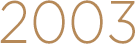
- 2003. 12
- 더페이스샵' 1호점(명동)오픈
- 더페이스샵 코리아 출범, 더페이스샵 가맹사업 시작
- 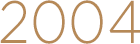
- 2004. 06
- 국내 매장 100개 돌파
- 2004. 11
- 홍콩/대만/싱가폴 등에 수출을 시작으로 해외 사업 시작
- 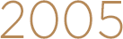
- 2005. 05
- 두바이 미용박람회 인테리어상, 'BEST STAND AWARD' 수상
해외 진출 가속화 - 호주, 미국, 캐나다, 일본, 태국, 도미니카 공화국 진출
기술연구소 설립,한국유통대상 국무총리상 수상
- 2005. 11
- BUSINESS WEEK지에 급성장하는 GLOBAL 브랜드로서의
명성을 세계 화장품 시장에 알리며,2006 요르단, 말레이시아, 필리핀 신규 진출
- 2005. 12
- 화장품 브랜드샵 업계 1위 달성
- 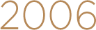
- 2006. 04
- 해외매장 100호점 돌파, 중국시장 진출 (상하이)
- 2006. 10
- 미국에서 THEFACESHOP 브랜드 샵 형태로 진출(뉴욕, 시카고, 산호세, LA등)
- 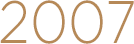
- 2007
- 브루나이, 중동지역의 UAE 신규 진출

- 2008
- 미국 대형 홈쇼핑 채널 HSN에 국내 화장품 업계 최초로 홈쇼핑 방송
대만 MASS CHANNEL 'WATSONS' (400개 매장) 입점
- 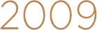
- 2009
- 대한민국 브랜드 대상 대통령상 수상
KOTRA 선정 '세계 시장을 누비는 한국의 강소제품들'수상
중국 시장 전역 사업 확대 (상해, 북경, 랴오닝성, 저장성, 광동성, 쓰촨성,
후베이성, 장수성, 지린성, 텐진시) 전세계 20여 개의 매장 운영
- 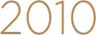
- 2010. 01
- LG생활건강 자회사 편입
- 2010. 04
- (사)희망의 망고나무와 협약하고 사회공헌 활동 본격화
- 2010. 11
- 차석용 대표이사 아시아머니誌 '2010 한국최고경영자' 2년 연속 선정
- 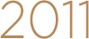
- 2011. 04
- 중국 헝청, 일본 이온그룹 등 업무 제휴
- 2011. 08
- 중소기업청 주최 프랜차이즈 수준평가 1등급 선정
- 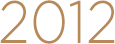
- 2012
- 더페이스샵 싱가포르 판매법인 인수
- 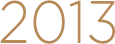
- 2013. 06
- 캐나다 바디 용품업체 'F&P' 인수 26개국 1,600여개의 매장 운영
- 2013. 07
- 아시아 소비자 모델 선발대회 '글로벌 탑걸' 이벤트 개최
- 2013. 12
- 브랜드 론칭 10주년
- 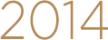
- 2014. 03
- 착한씨앗 캠페인 라인 4백만개 판매 돌파
- 2014. 04
- (사)지구촌사랑나눔 후원 협약 체결
- 2014. 09
- 연구생산 복합기지 'R&D이노베이션 센터' 설립
- 2014. 10
- 'R&D이노베이션 센터' 1호 제품 '더테라피' 출시
- 2014. 12
- 매출 6천 억 원 돌파
- 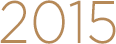
- 2015. 02
- 2015 대한민국 공감받는 브랜드 선정 (페이스북/카카오스토리 부문)
바레인, 모리셔스, 키르키스스탄 진출
- 2015. 03
- 2015 상반기 대한민국 명품브랜드' 선정 (캐릭터 마스크)
- 2015. 10
- 한국마케팅협회 주최 브랜드고객만족도 1위 수상 (수분크림 부문)